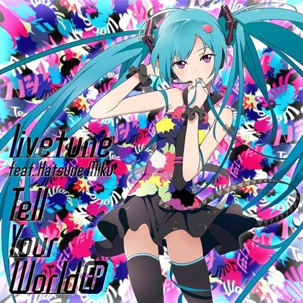
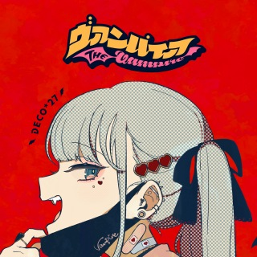

PW11A124_15_呉剛毅
声から生まれた、世界とつながるデジタル・シンガー。
初音ミクは、クリエイターの想いを歌声に変え、楽曲・映像・イラスト・ライブへと広がってきたバーチャル・シンガーです。このサイトでは、その世界観を未来的なデジタル空間として表現します。

広がり続ける創作とつながりをテーマにした代表曲。
初音ミクを象徴する楽曲のひとつとして愛され続ける一曲。

強いビートと印象的な映像表現で人気を集めた楽曲。
3DCGライブ、企画展、世界ツアー。画面の向こう側から、リアルなステージへ。